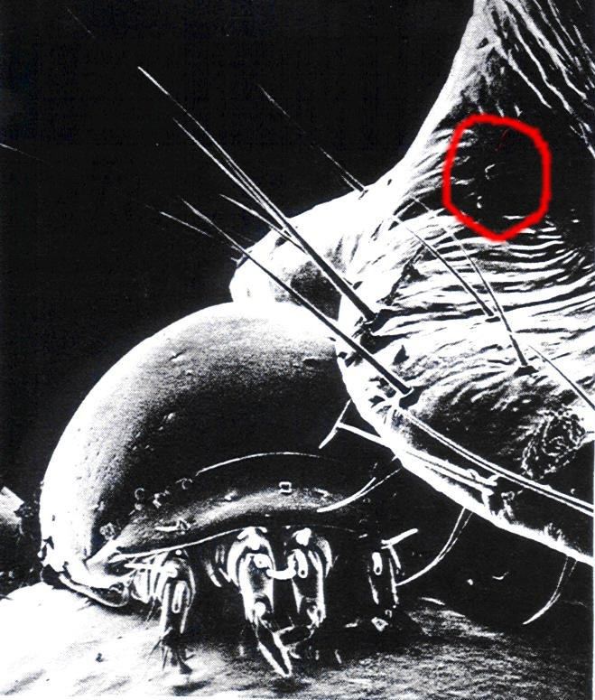

Figure 1-14
An insect with a bug problem: a mite on the neck of a termite and
some
bacteria in the dark hollow in the upper right section
of the picture (red circle).
(Photo
from Magnifications.
Copyright
© 1977 by David Scharf. Reprinted by permission
of Schocken Books, published by Pantheon Books,
a Division of Random House, Inc. and Century Hutchinson, London.)